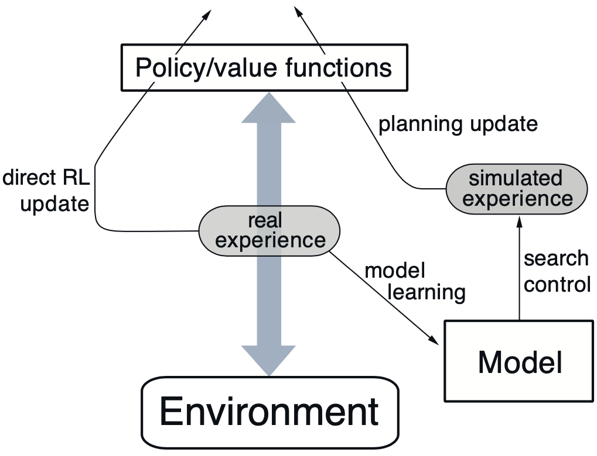
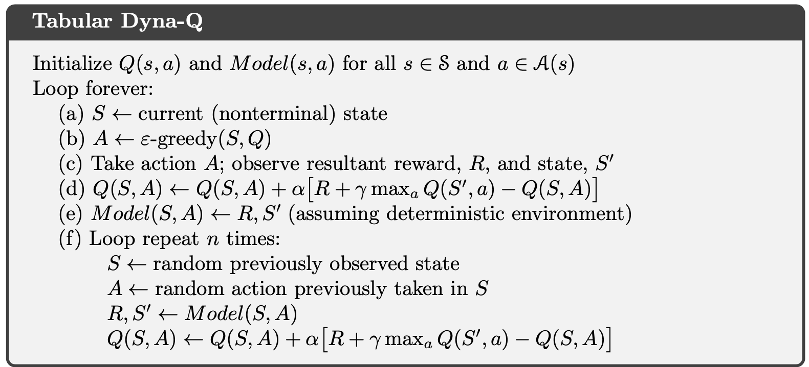

- Preface
- 8.1 Models and Planning
- 8.2 Dyna: Integrated Planning, Acting, and Learning
- 8.3 When the Model Is Wrong
- What is a Model?
- Comparing Sample and Distribution Models
- Random Tabular Q-planning
- The Dyna Architecture
- The Dyna Algorithm
- Dyna & Q-learning in a Simple Maze
- What if the model is inaccurate?
- In-depth with changing environments
- Drew Bagnell: self-driving, robotics, and Model Based RL
- Week 4 Summary
- Programming Assignment: Dyna-Q and Dyna-Q+
Preface
The course skip the n-step Bootstrapping. I think it’s interesting for my time series analysis. I will pick it up after finishing this course.
a unified view of reinforcement learning methods that require a model of the environment
These are respectively called model-based and model-free reinforcement learning methods. Model-based methods rely on planning as their primary component, while model-free methods primarily rely on learning.
Our goal in this chapter is a similar integration of model-based and model-free methods. Having established these as distinct in earlier chapters, we now explore the extent to which they can be intermixed.
8.1 Models and Planning
By a model of the environment we mean anything that an agent can use to predict how the environment will respond to its actions.
Some models produce a description of all possibilities and their probabilities; these we call distribution models. Other models produce just one of the possibilities, sampled according to the probabilities; these we call sample models.
For example, consider modeling the sum of a dozen dice. A distribution model would produce all possible sums and their probabilities of occurring, whereas a sample model would produce an individual sum drawn according to this probability distribution.
The word planning is used in several di↵erent ways in different fields. We use the term to refer to any computational process that takes a model as input and produces or improves a policy for interacting with the modeled environment:
In what we call plan-space planning, planning is instead a search through the space of plans.
Operators transform one plan into another, and value functions, if any, are defined over the space of plans.
Plan-space planning includes evolutionary methods and “partial-order planning,” a common kind of planning in artificial intelligence in which the ordering of steps is not completely determined at all stages of planning. Plan-space methods are diffcult to apply effciently to the stochastic sequential decision problems that are the focus in reinforcement learning, and we do not consider them further (but see, e.g., Russell and Norvig, 2010).
The di↵erence is that whereas planning uses simulated experience generated by a model, learning methods use real experience generated by the environment. Of course this di↵erence leads to a number of other di↵erences, for example, in how performance is assessed and in how flexibly experience can be generated. But the common structure means that many ideas and algorithms can be transferred between planning and learning.
This enables planning to be interrupted or redirected at any time with little wasted computation, which appears to be a key requirement for e�ciently intermixing planning with acting and with learning of the model. Planning in very small steps may be the most e�cient approach even on pure planning problems if the problem is too large to be solved exactly.
8.2 Dyna: Integrated Planning, Acting, and Learning
while interacting with the environment, a number of interesting issues arise. New information gained from the interaction may change the model and thereby interact with planning
Dyna-Q includes all of the processes shown in the diagram above—planning, acting, model-learning, and direct RL—all occurring continually.


8.3 When the Model Is Wrong
In some cases, the suboptimal policy computed by planning quickly leads to the discovery and correction of the modeling error. This tends to happen when the model is optimistic in the sense of predicting greater reward or better state transitions than are actually possible. The planned policy attempts to exploit these opportunities and in doing so discovers that they do not exist.
greater diffculties arise when the environment changes to become better than it was before, and yet the formerly correct policy does not reveal the improvement. In these cases the modeling error may not be detected for a long time, if ever.
Even with an $\epsilon$-greedy policy, it is very unlikely that an agent will take so many exploratory actions as to discover the shortcut.
The Dyna-Q+ agent that did solve the shortcut maze uses one such heuristic. This agent keeps track for each state–action pair of how many time steps have elapsed since the pair was last tried in a real interaction with the environment.
The more time that has elapsed, the greater (we might presume) the chance that the dynamics of this pair has changed and that the model of it is incorrect.
In particular, if the modeled reward for a transition is r, and the transition has not been tried in T time steps, then planning updates are done as if that transition produced a reward of $r +\sqrt(T)*k$, for some small k.
But there is problem, when shall we use this bonus reward? update or selection or both?
What is a Model?
Comparing Sample and Distribution Models
Random Tabular Q-planning
This results in some waiting time from after the Learning Update and when the next action is taken. We can fill in this waiting time with Planning Updates. Imagine we have a robot that is standing near a cliff.
The Dyna Architecture
In addition, we want to control how the model generates this simulated experience, what states the agent will plan from. We call this process search control.
The Dyna Algorithm
search controls selects a previously visited state action pair at random. It must be a state action pair the agent has seen before. Otherwise, the model would not know what happens next.
Dyna & Q-learning in a Simple Maze
The planning update will not have any effect if the sample state action pair produces a 0 T error. This happened a lot in this environment because all the rewards are 0, and so are the initial values. What would happen if we ordered the state action pairs in a more efficient way? It turns out the agent could learn a good policy only using a sixth of the planning updates.
In larger environments random search control becomes even more problematic. If you want to learn more about this topic, check out section 8.4 of the textbook.
What if the model is inaccurate?
In-depth with changing environments
However, double-checking transitions with low valued actions will often lead to low reward. In changing environments, the agent’s model might become inaccurate at any time. So the agent has to make a choice; explorer to make sure it’s model is accurate, or exploit the model to compute the optimal policy, assuming that the model is correct.
Drew Bagnell: self-driving, robotics, and Model Based RL
Week 4 Summary
Programming Assignment: Dyna-Q and Dyna-Q+
Recall that when adding a state-action to the model, if the agent is visiting the state for the first time, then the remaining actions need to be added to the model as well with zero reward and a transition into itself. (to store the time we do not access them)
When we step once, the tau need to add one except the state action pair we access.